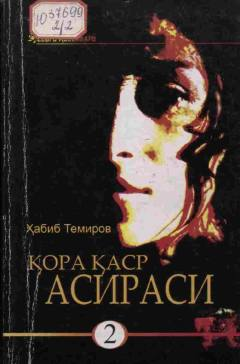

QQSubut xotinining sirli o'limini ochishga urinadi.
Bu kitob Habib Temirovning 'Qora qasr asirasi' romanining ikkinchi qismi bo'lib, 2010-yilda nashr etilgan. Asarda Subut, Afifa, Abdi, Muqimxonov va Zohidiylarning taqdiri davom ettiriladi. Qahramon Subut xotinining o'limi sirini ochishga urinib, jurnalistik tekshiruv o'tkazishga qaror qiladi.